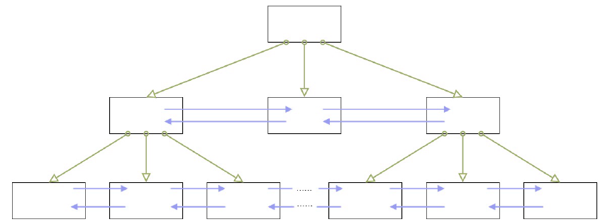

SQL必知必会
01丨了解SQL：一门半衰期很长的语言
半衰期很长的 SQL
SQL 有两个重要的标准，分别是 SQL92 和 SQL99，它们分别代表了 92 年和 99 年颁布的SQL 标准，我们今天使用的 SQL 语言依然遵循这些标准。
SQL 语言按照功能划分
- DDL，英文叫做 Data Definition Language，也就是数据定义语言，它用来定义我们的数据库对象，包括数据库、数据表和列。通过使用 DDL，我们可以创建，删除和修改数据库和表结构。
- DML，英文叫做 Data Manipulation Language，数据操作语言，我们用它操作和数据库相关的记录，比如增加、删除、修改数据表中的记录。
- DCL，英文叫做 Data Control Language，数据控制语言，我们用它来定义访问权限和安全级别。
- DQL，英文叫做 Data Query Language，数据查询语言，我们用它查询想要的记录，它是 SQL 语言的重中之重。
SQL之旅
SQL 是我们与 DBMS 交流的语言，我们在创建 DBMS 之前，还需要对它进行设计，对于RDBMS 来说采用的是 ER 图（Entity Relationship Diagram），即实体 - 关系图的方式进行设计。
ER 图评审通过后，我们再用 SQL 语句或者可视化管理工具（如 Navicat）创建数据表。
实体 - 关系图
- 它是我们用来描述现实世界的概念模型，在这个模型中有 3 个要素：实体、属性、关系。
- 实体就是我们要管理的对象，属性是标识每个实体的属性，关系则是对象之间的关系。
- 实体之间除了多对多之外，也有一对一和一对多的关系。
02丨DBMS的前世今生
DB、DBS 和 DBMS 的区别
- DB 的英文是 DataBase，也就是数据库。数据库是存储数据的集合，你可以把它理解为多个数据表。
- DBS 的英文是 DataBase System，数据库系统。它是更大的概念，包括了数据库、数据库管理系统以及数据库管理人员 DBA。
- DBMS 的英文全称是 DataBase Management System，数据库管理系统，实际上它可以对多个数据库进行管理，所以你可以理解为 DBMS = 多个数据库（DB） + 管理程序。
- 虽然我们有时候把 Oracle、MySQL 等称之为数据库，但确切讲，它们应该是数据库管理系统，即 DBMS。
关系型和非关系型数据库
RDBMS
- 关系型数据库（RDBMS）就是建立在关系模型基础上的数据库，SQL 就是关系型数据库的查询语言。
相比于 SQL，NoSQL 泛指非关系型数据库，包括了榜单上的键值型数据库、文档型数据库、搜索引擎和列存储等，除此以外还包括图形数据库。
键值型数据库
- 典型代表 Redis
- 键值型数据库通过 Key-Value 键值的方式来存储数据，其中 Key 和 Value 可以是简单的对象，也可以是复杂的对象。Key 作为唯一的标识符，优点是查找速度快，在这方面明显优于关系型数据库，同时缺点也很明显，它无法像关系型数据库一样自由使用条件过滤（比如 WHERE），如果你不知道去哪里找数据，就要遍历所有的键，这就会消耗大量的计算。键值型数据库典型的使用场景是作为内容缓存。
文档型数据库
- 文档型数据库用来管理文档，在数据库中文档作为处理信息的基本单位，一个文档就相当于一条记录，MongoDB 是最流行的文档型数据库。
搜索引擎
- 搜索引擎也是数据库检索中的重要应用，常见的全文搜索引擎有 Elasticsearch、Splunk 和Solr。虽然关系型数据库采用了索引提升检索效率，但是针对全文索引效率却较低。搜索引擎的优势在于采用了全文搜索的技术，核心原理是“倒排索引”。
列式数据库
- 列式数据库是相对于行式存储的数据库，Oracle、MySQL、SQL Server 等数据库都是采用的行式存储（Row-based），而列式数据库是将数据按照列存储到数据库中，这样做的好处是可以大量降低系统的 I/O，适合于分布式文件系统，不足在于功能相对有限。
图形数据库
- 利用了图这种数据结构存储了实体（对象）之间的关系。最典型的例子就是社交网络中人与人的关系，数据模型主要是以节点和边（关系）来实现，特点在于能高效地解
决复杂的关系问题。
- 利用了图这种数据结构存储了实体（对象）之间的关系。最典型的例子就是社交网络中人与人的关系，数据模型主要是以节点和边（关系）来实现，特点在于能高效地解
SQL阵营与NoSQL阵营
- NoSQL 最早的提出是想远离SQL，但是随着发展却发现越来越离不开SQL
- NoSQL是对SQL很好的补充
SQL阵营
- Oracle：第一个商用关系型数据库，企业级软件霸主
- MySQL：开源数据库，被Oracle收购，MariaDB 是 MySQL的分支
- SQL Server：微软商用关系型数据库，同时 Access 是桌面数据库
03丨学会用数据库的方式思考SQL是如何执行的
04丨使用DDL创建数据库&数据表时需要注意什么？
DDL 的基础语法及设计工具
DDL 的英文全称是 Data Definition Language，中文是数据定义语言。它定义了数据库的结构和数据表的结构。
在 DDL 中，我们常用的功能是增删改，分别对应的命令是CREATE、DROP 和 ALTER。
1.对数据库进行定义
- CREATE DATABASE nba; // 创建一个名为 nba 的数据库
- DROP DATABASE nba; // 删除一个名为 nba 的数据库
2.对数据表进行定义
创建表结构
- CREATE TABLE player (
player_id int(11) NOT NULL AUTO_INCREMENT,
player_name varchar(255) NOT NULL
);
- CREATE TABLE player (
修改表结构
- 添加字段
- ALTER TABLE player ADD (age int(11));
- 修改字段名
- ALTER TABLE player RENAME COLUMN age to player_age
- 修改字段的数据类型
- ALTER TABLE player MODIFY (player_age float(3,1));
- 删除字段
- ALTER TABLE player DROP COLUMN player_age;
数据表的常见约束
主键约束
- 主键起到唯一标识一条记录的作用，不能重复，不能为空
外键约束
- 外键是确保了表与表之间引用完整性。一个表中的外键对应的另一张表的主键。外键是可以重复的，也可以为空
唯一性约束
- 唯一性约束表明了字段在表中的数值是唯一的，即使我们已经有了主键，还可以对其他字段进行唯一性约束
NOT NULL约束
- 字段的为空约束
DEFAULT
- 字段的默认值
CHECK约束
- 用来检查特定字段取值范围的有效性
设计数据表的原则
“三少一多”原则
1.数据表的个数越少越好
- RDBMS 的核心在于对实体和联系的定义，也就是 E-R 图（Entity Relationship Diagram），数据表越少，证明实体和联系设计得越简洁，既方便理解又方便操作。
2.数据表中的字段个数越少越好
- 字段个数越多，数据冗余的可能性越大。设置字段个数少的前提是各个字段相互独立，而不是某个字段的取值可以由其他字段计算出来。当然字段个数少是相对的，我们通常会在数据冗余和检索效率中进行平衡。
3.数据表中联合主键的字段个数越少越好
- 设置主键是为了确定唯一性，当一个字段无法确定唯一性的时候，就需要采用联合主键的方式（也就是用多个字段来定义一个主键）。联合主键中的字段越多，占用的索引空间越大，不仅会加大理解难度，还会增加运行时间和索引空间，因此联合主键的字段个数越少越好。
4.使用主键和外键越多越好
- 数据库的设计实际上就是定义各种表，以及各种字段之间的关系。这些关系越多，证明这些实体之间的冗余度越低，利用度越高。这样做的好处在于不仅保证了数据表之间的独立性，还能提升相互之间的关联使用率。
05丨检索数据：你还在SELECT * 么？
查询常数
就是在SELECT 查询结果中增加一列固定的常数列。这列的取值是我们指定的，而不是从数据表中动态取出的。
为什么要对常数进行查询呢？
- SQL 中的 SELECT 语法的确提供了这个功能，一般来说我们只从一个表中查询数据，
通常不需要增加一个固定的常数列，但如果我们想整合不同的数据源，用常数列作为这个表的标记，就需要查询常数。
- SQL 中的 SELECT 语法的确提供了这个功能，一般来说我们只从一个表中查询数据，
例子
SQL：SELECT ‘王者荣耀’ as platform, name FROM heros
需要说明的是，如果常数是个字符串，那么使用单引号（‘’）就非常重要了，比如‘王者荣耀’。单引号说明引号中的字符串是个常数，否则 SQL 会把王者荣耀当成列名进行查询，但实际上数据表里没有这个列名，就会引起错误。如果常数是英文字母，比如’WZRY’也需要加引号。如果常数是个数字，就可以直接写数字，不需要单引号
SELECT 的执行顺序
- 关键字的顺序是不能颠倒的：
- select…from…where…group by…having…order by…
2.SELECT 语句的执行顺序
- from->where->group by->having->order by -> limit
- 在 SELECT 语句执行这些步骤的时候，每个步骤都会产生一个虚拟表，然后将这个虚拟表传入下一个步骤中作为输入。需要注意的是，这些步骤隐含在 SQL 的执行过程中，对于我们来说是不可见的。
06丨数据过滤：SQL数据过滤都有哪些方法？
使用通配符进行过滤
如果我们想要匹配单个字符，就需要使用下划线 (_) 通配符。（%）和（_）的区别在于，（%）代表一个或多个字符，而（_）只代表一个字符。
例子
- 比如我们想要查找英雄名除了第一个字以外，包含“太”字的英雄有哪些。
- SQL：SELECT name FROM heros WHERE name LIKE ‘_% 太 %’
- 因为太乙真人的太是第一个字符，而_%太%中的太不是在第一个字符，所以匹配不到“太乙真人”，只可以匹配上“东皇太一”。
07丨什么是SQL函数？为什么使用SQL函数可能会带来题？
常用的 SQL 函数
- 算术函数
例子
- SELECT ABS(-2)，运行结果为 2
- SELECT MOD(101,3)，运行结果 2
- SELECT ROUND(37.25,1)，运行结果 37.3
- 字符串函数
例子
- SELECT CONCAT(‘abc’, 123)，运行结果为 abc123。
- SELECT LENGTH(‘你好’)，运行结果为 6。
- SELECT CHAR_LENGTH(‘你好’)，运行结果为 2。
- SELECT LOWER(‘ABC’)，运行结果为 abc。
- SELECT UPPER(‘abc’)，运行结果 ABC。
- SELECT REPLACE(‘fabcd’, ‘abc’, 123)，运行结果为 f123d。
- SELECT SUBSTRING(‘fabcd’, 1,3)，运行结果为 fab。
- 日期函数
例子
- SELECT CURRENT_DATE()，运行结果为 2019-04-03。
- SELECT CURRENT_TIME()，运行结果为 21:26:34。
- SELECT CURRENT_TIMESTAMP()，运行结果为 2019-04-03 21:26:34。
- SELECT EXTRACT(YEAR FROM ‘2019-04-03’)，运行结果为 2019。
- SELECT DATE(‘2019-04-01 12:00:05’)，运行结果为 2019-04-01。
这里需要注意的是，DATE 日期格式必须是 yyyy-mm-dd 的形式。如果要进行日期比较，就要使用 DATE 函数，不要直接使用日期与字符串进行比较
- 转换函数
例子
- SELECT CAST(123.123 AS INT)，运行结果会报错。
- SELECT CAST(123.123 AS DECIMAL(8,2))，运行结果为 123.12。
- SELECT COALESCE(null,1,2)，运行结果为 1。
CAST 函数在转换数据类型的时候，不会四舍五入，如果原数值有小数，那么转换为整数类型的时候就会报错。不过你可以指定转化的小数类型，在 MySQL 和 SQL Server 中，你可以用DECIMAL(a,b)来指定，其中 a 代表整数部分和小数部分加起来最大的位数，b 代表小数位数，比如DECIMAL(8,2)代表的是精度为 8 位（整数加小数位数最多为 8 位），小数位数为 2 位的数据类型。所以SELECT CAST(123.123 AS DECIMAL(8,2))的转换结果为 123.12。
为什么使用 SQL 函数会带来问题
- 我们在使用 SQL 语言的时候，不是直接和这门语言打交道，而是通过它使用不同的数据库软件，即 DBMS。DBMS之间的差异性很大，远大于同一个语言不同版本之间的差异。实际上，只有很少的函数是被DBMS 同时支持的。比如，大多数 DBMS 使用（||）或者（+）来做拼接符，而在 MySQL中的字符串拼接函数为Concat()。大部分 DBMS 会有自己特定的函数，这就意味着采用SQL 函数的代码可移植性是很差的，因此在使用函数的时候需要特别注意。
关于大小写的规范
MySQL 在 Linux 的环境下，数据库名、表名、变量名是严格区分大小写的，而字段名是忽略大小写的。
而 MySQL 在 Windows 的环境下全部不区分大小写。
这就意味着如果你的变量名命名规范没有统一，就可能产生错误。有关命名规范
的建议：- 关键字和函数名称全部大写；
- 数据库名、表名、字段名称全部小写；
- SQL 语句必须以分号结尾。
08丨什么是SQL的聚集函数，如何利用它们汇总表的数据？
聚集函数都有哪些
说明
- COUNT(role_assist)会忽略值为 NULL 的数据行，而 COUNT(*) 只是统计数据行数，不管某个字段是否为 NULL。
例子
- （求平均值，保留小数点后两位小数）SQL: SELECT ROUND(AVG(DISTINCT hp_max), 2) FROM heros
如何对数据进行分组，并进行聚集统计
- SQL: SELECT COUNT(*), role_main FROM heros GROUP BY role_main
09丨子查询：子查询的种类都有哪些，如何提高子查询的性能？
什么是关联子查询，什么是非关联子查询
- 子查询从数据表中查询了数据结果，如果这个数据结果只执行一次，然后这个数据结果作为主查询的条件进行执行，那么这样的子查询叫做非关联子查询。
- 同样，如果子查询需要执行多次，即采用循环的方式，先从外部查询开始，每次都传入子查询进行查询，然后再将结果反馈给外部，这种嵌套的执行方式就称为关联子查询。
EXISTS 子查询
- 关联子查询通常也会和 EXISTS 一起来使用，EXISTS 子查询用来判断条件是否满足，满足的话为 True，不满足为False。
集合比较子查询
我们该使用 IN还是 EXISTS 呢？
SELECT * FROM A WHERE cc IN (SELECT cc FROM B)
SELECT * FROM A WHERE EXIST (SELECT cc FROM B WHERE B.cc = A.cc)
实际上在查询过程中，在我们对 cc 列建立索引的情况下，我们还需要判断表 A 和表 B 的大小。
在这里例子当中，表A 指的是 player 表，表 B 指的是 player_score 表。如果表
A 比表 B 大，那么 IN 子查询的效率要比 EXIST 子查询效率高，因为这时 B 表中如果对 cc 列进行了索引，那么 IN 子查询的效率就会比较高。同样，如果表 A 比表 B 小，那么使用 EXISTS 子查询效率会更高，因为我们可以使用到 A 表中对 cc 列的索引，而不用从 B 中进行 cc 列的查询。
总结
- IN表是外边和内表进行hash连接，是先执行子查询。EXISTS是对外表进行循环，然后在内表进行查询。因此如果外表数据量大，则用IN，如果外表数据量小，也用EXISTS。
将子查询作为计算字段
10丨常用的SQL标准有哪些，在SQL92中是
如何使用连接的？
背景
- 我们知道 SQL 的英文全称叫做 Structured Query Language，它有一个很强大的功能，就是能在各个数据表之间进行连接查询（Query）。这是因为 SQL 是建立在关
系型数据库基础上的一种语言。关系型数据库的典型数据结构就是数据表，这些数据表的组成都是结构化的（Structured）。 - 正是因为在数据库中，表的组成是基于关系模型的，所以一个表就是一个关系。一个数据库中可以包括多个表，也就是存在多种数据之间的关系。而我们之所以能使用 SQL 语言对各个数据表进行复杂查询，核心就在于连接，它可以用一条 SELECT 语句在多张表之间进行查询。
常用的 SQL 标准有哪些
- SQL 有两个主要的标准，分别是 SQL92 和 SQL99。
- 一般来说 SQL92 的形式更简单，但是写的 SQL 语句会比较长，可读性较差。而 SQL99相比于 SQL92 来说，语法更加复杂，但可读性更强。我们从这两个标准发布的页数也能看出，SQL92 的标准有 500页，而 SQL99 标准超过了 1000 页。
在 SQL92 中是如何使用连接的
笛卡尔积
笛卡尔乘积是一个数学运算。假设我有两个集合 X 和 Y，那么 X 和 Y 的笛卡尔积就是 X 和 Y 的所有可能组合，也就是第一个对象来自于 X，第二个对象来自于 Y 的所有可能。
笛卡尔积也称为交叉连接，英文是 CROSS JOIN，它的作用就是可以把任意表进行连接，即使这两张表不相关。
例子
- SQL: SELECT * FROM player, team
等值连接
- 两张表的等值连接就是用两张表中都存在的列进行连接。
非等值连接
- 当我们进行多表查询的时候，如果连接多个表的条件是等号时，就是等值连接，其他的运算符连接就是非等值查询。
外连接（左连接、右连接）
- 除了查询满足条件的记录以外，外连接还可以查询某一方不满足条件的记录。两张表的外连接，会有一张是主表，另一张是从表。如果是多张表的外连接，那么第一张表是主表，即显示全部的行，而第剩下的表则显示对应连接的信息。在SQL92 中采用（+）代表从表所在的位置，而且在 SQL92中，只有左外连接和右外连接，没有全外连接。
- 左外连接，就是指左边的表是主表，需要显示左边表的全部行，而右侧的表是从表，（+）表示哪个是从表。
- 右外连接，指的就是右边的表是主表，需要显示右边表的全部行，而左侧的表是从表。
- 需要注意的是，LEFT JOIN 和 RIGHT JOIN 只存在于SQL99 及以后的标准中，在 SQL92 中不存在，只能用（+）表示。
自连接
- 自连接可以对多个表进行操作，也可以对同一个表进行操作。也就是说查询条件使用了当前表的字段。
- 如果不用自连接的话，需要采用两次 SQL 查询。
总结
- SQL92 和 SQL99 是经典的 SQL 标准，也分别叫做 SQL-2和 SQL-3 标准。也正是在这两个标准发布之后，SQL 影响力越来越大，甚至超越了数据库领域。
- 我们也要注意到 SQL 标准的变化，以及不同数据库管理系统使用时的差别，比如 Oracle 对 SQL92 支持较好，而 MySQL 则不支持 SQL92 的外连接。
11丨SQL99是如何使用连接的，与SQL92的区别是什么？
SQL99 标准中的连接查询
交叉连接
- 交叉连接实际上就是 SQL92 中的笛卡尔乘积，只是这里我们采用的是 CROSS JOIN。
- SQL: SELECT * FROM player CROSS JOIN team
- 如果多张表进行交叉连接，比如表 t1，表 t2，表 t3 进行交叉连接，可以写成下面这样
- SQL: SELECT * FROM t1 CROSS JOIN t2 CROSS JOIN t3
自然连接
- 相当于SQL92 中的等值连接。它会帮你自动查询两张连接表中所有相同的字段，然后进行等值连接。
ON 连接
USING 连接
外连接
SQL99 的外连接包括了三种形式：
- 左外连接：LEFT JOIN 或 LEFT OUTER JOIN
- 右外连接：RIGHT JOIN 或 RIGHT OUTER JOIN
- 全外连接：FULL JOIN 或 FULL OUTER JOIN
自连接
SQL99 和 SQL92 的区别
不同 DBMS 中使用连接需要注意的地方
SQL 连接具有通用性，但是不同的 DBMS 在使用规范上会存在差异，在标准支持上也存在不同。
- 不是所有的 DBMS 都支持全外连接
- 虽然 SQL99 标准提供了全外连接，但不是所有的 DBMS 都支持。不仅 MySQL 不支持，Access、SQLite、MariaDB等数据库软件也不支持。不过在 Oracle、DB2、SQL Server 中是支持的。
2.Oracle 没有表别名 AS
- 为了让 SQL 查询语句更简洁，我们经常会使用表别名 AS，不过在 Oracle 中是不存在 AS 的，使用表别名的时候，直接在表名后面写上表别名即可，比如 player p，而不是player AS p。
3.SQLite 的外连接只有左连接
- SQLite 是一款轻量级的数据库软件，在外连接上只支持左连接，不支持右连接，不过如果你想使用右连接的方式，比如table1 RIGHT JOIN table2，在 SQLite 你可以写成table2 LEFT JOIN table1，这样就可以得到相同的效果。
一些关于连接的性能问题
- 控制连接表的数量
- 多表连接就相当于嵌套 for 循环一样，非常消耗资源，会让SQL 查询性能下降得很严重，因此不要连接不必要的表。在许多 DBMS 中，也都会有最大连接表的限制。
- 在连接时不要忘记 WHERE 语句
- 多表连接的目的不是为了做笛卡尔积，而是筛选符合条件的数据行，因此在多表连接的时候不要忘记了 WHERE 语句，这样可以过滤掉不必要的数据行返回。
- 使用自连接而不是子查询
- 一般情况建议你使用自连接，因为在许多 DBMS 的处理过程中，对于自连接的处理
速度要比子查询快得多。 - 你可以这样理解：子查询实际上是通过未知表进行查询后的条件判断，而自连接是通过已知的自身数据表进行条件判断，因此在大部分 DBMS 中都对自连接处理进行了优化。
12丨视图在SQL中的作用是什么，它是怎样工作的？
概念
- 虚拟表，本身是不具有数据的
- 虚拟表的创建连接了一个或多个数据表，不同的查询应用都可以建立在虚拟表之上。
如何创建，更新和删除视图
视图作为一张虚拟表，帮我们封装了底层与数据表的接口。它相当于是一张表或多张表的数据结果集。
视图的这一特点，可以帮我们简化复杂的 SQL 查询，比如在编写视图后，我们就可以直接重用它，而不需要考虑视图中包含的基础查询的细节。
通常情况下，小型项目的数据库可以不使用视图，但是在大型项目中，以及数据表比较复杂的情况下，视图的价值就凸显出来了，它可以帮助我们把经常查询的结果集放到虚拟表中，提升使用效率。
创建视图：CREATE VIEW
- CREATE VIEW view_name AS
SELECT column1, column2
FROM table
WHERE condition - 当视图创建之后，它就相当于一个虚拟表，可以直接使用：
- SELECT * FROM player_above_avg_height
- CREATE VIEW view_name AS
嵌套视图
- 当我们创建好一张视图之后，还可以在它的基础上继续创建视图
修改视图：ALTER VIEW
- ALTER VIEW view_name AS
SELECT column1, column2
FROM table
WHERE condition - 你能看出来它的语法和创建视图一样，只是对原有视图的更新。
- ALTER VIEW view_name AS
删除视图：DROP VIEW
- DROP VIEW view_name
- 需要说明的是，SQLite 不支持视图的修改，仅支持只读视图，也就是说你只能使用 CREATE VIEW 和 DROP VIEW，如果想要修改视图，就需要先 DROP 然后再 CREATE。
如何使用视图简化 SQL 操作
总结
- 安全性
- 虚拟表是基于底层数据表的，我们在使用视图时，一般不会轻易通过视图对底层数据进行修改，即使是使用单表的视图，也会受到限制，比如计算字段，类型转换等是无法通过视图来对底层数据进行修改的，这也在一定程度上保证了数据表的数据安全性。同时，我们还可以针对不同用户开放不同的数据查询权限，比如人员薪酬是个敏感的字段，那么只给某个级别以上的人员开放，其他人的查询视图中则不提供这个字段。
- 简单清晰
- 视图是对 SQL 查询的封装，它可以将原本复杂的 SQL 查询简化，在编写好查询之后，我们就可以直接重用它而不必要知道基本的查询细节。同时我们还可以在视图之上再嵌套视图。这样就好比我们在进行模块化编程一样，不仅结构清晰，还提升了代码的复用率。
视图和临时表有什么区别呢？
- 临时表是真实存在的数据表，不过它不用于长期存放数据，只为当前连接存在，关闭连接后，临时表就会自动释放。
13丨什么是存储过程，在实际项目中用得多么？
什么是存储过程，如何创建一个存储过程
存储过程的英文是 Stored Procedure。它的思想很简单，就是 SQL 语句的封装。一旦存储过程被创建出来，使用它就像使用函数一样简单，我们直接通过调用存储过程名即可。
如何定义一个存储过程：
CREATE PROCEDURE 存储过程名称 ([参数列表])
BEGIN
需要执行的语句
END在这里，我们使用 CREATE PROCEDURE 创建一个存储过程，后面是存储过程的名称，以及过程所带的参数，可以包括输入参数和输出参数。最后由 BEGIN 和 END 来定义我们所要执行的语句块。
和视图一样，我们可以删除已经创建的存储过程，使用的是 DROP PROCEDURE。如果要更新存储过程，我们需要使用 ALTER PROCEDURE。
例子
- 比如我想做一个累加运算，计算 1+2+…+n 等于多少，我们可以通过参数 n 来表示想要累加的个数，那么如何用存储过程实现这一目的呢？
- CREATE PROCEDURE
add_num(IN n INT)
BEGIN
ENDDECLARE i INT; DECLARE sum INT;SET i = 1; SET sum = 0; WHILE i <= n do set sum="sum" + i; i="i" +1; end while; select sum;< code> - 当我们需要再次使用这个存储过程的时候，直接使用 CALL add_num(50);即可。
DELIMITER 定义语句的结束符
DELIMITER 的作用
- 临时定义新的结束符。
因为默认情况下 SQL 采用（；）作为结束符，这样当存储过程中的每一句 SQL 结束之后，采用（；）作为结束符，就相当于告诉 SQL 可以执行这一句了。但是存储过程是一个整体，我们不希望 SQL 逐条执行，而是采用存储过程整段执行的方式，因此我们就需要临时定义新的 DELIMITER，新的结束符可以用（//）或者（$$）。如果你用的是 MySQL，那么上面这段代码，应该写成右侧这样：
- DELIMITER //
CREATE PROCEDUREadd_num(IN n INT)
BEGIN
END //DECLARE i INT; DECLARE sum INT; SET i = 1; SET sum = 0; WHILE i <= n do set sum="sum" + i; i="i" +1; end while; select sum;< code>
DELIMITER ;
- DELIMITER //
首先我用（//）作为结束符，又在整个存储过程结束后采用了（//）作为结束符号，告诉SQL 可以执行了，然后再将结束符还原成默认的（;）。
存储过程的 3 种参数类型
- IN 和 OUT 的结合，既用于存储过程的传入参数，同时又可以把计算结果放到参数中，调用者可以得到返回值。
- IN 参数必须在调用存储过程时指定，而在存储过程中修改该参数的值不能被返回。而 OUT 参数和 INOUT 参数可以在存储过程中被改变，并可返回。
流控制语句
流控制语句
- BEGIN…END：BEGIN…END 中间包含了多个语句，每个语句都以（;）号为结束符。
- DECLARE：DECLARE 用来声明变量，使用的位置在于 BEGIN…END 语句中间，而且需要在其他语句使用之前进行变量的声明。
- SET：赋值语句，用于对变量进行赋值。
- SELECT…INTO：把从数据表中查询的结果存放到变量中，也就是为变量赋值。
- 5.IF…THEN…ENDIF：条件判断语句，我们还可以在 IF…THEN…ENDIF 中使用 ELSE 和ELSEIF 来进行条件判断。
- 6.CASE：CASE 语句用于多条件的分支判断
- 7.LOOP、LEAVE 和 ITERATE：LOOP 是循环语句，使用 LEAVE 可以跳出循环，使用ITERATE 则可以进入下一次循环。可以把LEAVE 理解为 BREAK，把 ITERATE 理解为 CONTINUE。
- 8.REPEAT…UNTIL…END REPEAT：这是一个循环语句，首先会执行一次循环，然后在UNTIL 中进行表达式的判断，如果满足条件就退出，即 END REPEAT；如果条件不满足，则会就继续执行循环，直到满足退出条件为止。
- 9.WHILE…DO…END WHILE：这也是循环语句，和 REPEAT 循环不同的是，这个语句需要先进行条件判断，如果满足条件就进行循环，如果不满足条件就退出循环。
关于存储过程使用的争议
存储过程缺点
- 可移植性差，存储过程不能跨数据库移植，比如在 MySQL、Oracle 和 SQL Server 里编写的存储过程，在换成其他数据库时都需要重新编写。
- 其次调试困难，只有少数 DBMS 支持存储过程的调试。对于复杂的存储过程来说，开发和维护都不容易。
- 此外，存储过程的版本管理也很困难，比如数据表索引发生变化了，可能会导致存储过程失效。我们在开发软件的时候往往需要进行版本管理，但是存储过程本身没有版本控制，版本迭代更新的时候很麻烦。
- 最后它不适合高并发的场景，高并发的场景需要减少数据库的压力，有时数据库会采用分库分表的方式，而且对可扩展性要求很高，在这种情况下，存储过程会变得难以维护，增加数据库的压力，显然就不适用了。
存储过程好处
- 首先存储过程可以一次编译多次使用。存储过程只在创造时进行编译，之后的使用都不需要重新编译，这就提升了 SQL 的执行效率。其次它可以减少开发工作量。将代码封装成模块，实际上是编程的核心思想之一，这样可以把复杂的问题拆解成不同的模块，然后模块之间可以重复使用，在减少开发工作量的同时，还能保证代码的结构清晰。
- 存储过程的安全性强，我们在设定存储过程的时候可以设置对用户的使用权限，这样就和视图一样具有较强的安全性。
- 最后它可以减少网络传输量，因为代码封装到存储过程中，每次使用只需要调用存储过程即可，这样就减少了网络传输量。
- 同时在进行相对复杂的数据库操作时，原本需要使用一条一条的 SQL 语句，可能要连接多次数据库才能完成的操作，现在变成了一次存储过程，只需要连接一次即可。
14丨什么是事务处理，如何使用COMMIT和ROLLBACK进行操作？
事务的常用控制语句
- START TRANSACTION 或者 BEGIN，作用是显式开启一个事务。
- COMMIT：提交事务。当提交事务后，对数据库的修改是永久性的。
- ROLLBACK 或者 ROLLBACK TO [SAVEPOINT]，意为回滚事务。意思是撤销正在进行的所有没有提交的修改，或者将事务回滚到某个保存点。
- SAVEPOINT：在事务中创建保存点，方便后续针对保存点进行回滚。一个事务中可以存在多个保存点。
- RELEASE SAVEPOINT：删除某个保存点。
- SET TRANSACTION，设置事务的隔离级别。
MySQL 中completion_type 参数
- completion=0，这是默认情况。也就是说当我们执行 COMMIT 的时候会提交事务，在执行下一个事务时，还需要我们使用 START TRANSACTION 或者 BEGIN 来开启。
- completion=1，这种情况下，当我们提交事务后，相当于执行了 COMMIT AND
CHAIN，也就是开启一个链式事务，即当我们提交事务之后会开启一个相同隔离级别的事务
- completion=1，这种情况下，当我们提交事务后，相当于执行了 COMMIT AND
- completion=2，这种情况下 COMMIT=COMMIT AND RELEASE，也就是当我们提交后，会自动与服务器断开连接。
- 当使用了 completion=1，也就是说当我提交之后，相当于在下一行写了一个 START TRANSACTION 或 BEGIN。
autocommit 参数
- 当我们设置 autocommit=0 时，不论是否采用 START TRANSACTION 或者 BEGIN 的方式来开启事务，都需要用 COMMIT 进行提交，让事务生效，使用 ROLLBACK 对事务进行回滚。
- 当我们设置 autocommit=1 时，每条 SQL 语句都会自动进行提交。不过这时，如果你采用 START TRANSACTION 或者 BEGIN 的方式来显式地开启事务，那么这个事务只有在 COMMIT 时才会生效，在 ROLLBACK 时才会回滚。
20丨当我们思考数据库调优的时候，都有哪些维度可以选择？
数据库调优的目标
简单来说，数据库调优的目的就是要让数据库运行得更快，也就是说响应的时间更快，吞吐量更大。
不过随着用户量的不断增加，以及应用程序复杂度的提升，我们很难用“更快”去定义数据库调优的目标，因为用户在不同时间段访问服务器遇到的瓶颈不同，比如双十一促销的时候会带来大规模的并发访问；还有用户在进行不同业务操作的时候，数据库的事务处理和SQL 查询都会有所不同。因此我们还需要更加精细的定位，去确定调优的目标。
如何确定调优目标？
用户的反馈
日志分析
服务器资源使用监控
- 通过监控服务器的 CPU、内存、I/O 等使用情况，可以实时了解服务器的性能使用，与历史情况进行对比。
数据库内部状况监控
- 在数据库的监控中，活动会话（Active Session）监控是一个重要的指标。通过它，你可以清楚地了解数据库当前是否处于非常繁忙的状态，是否存在 SQL 堆积等。
- 除了活动会话监控以外，我们也可以对事务、锁等待等进行监控
可以从以下维度进行数据库调优
1、选择适合的 DBMS
- 如果对事务性处理以及安全性要求高的话，可以选择商业的数据库产品。这些数据库在事务处理和查询性能上都比较强，比如采用 SQL Server，那么单表存储上亿条数据是没有问题的。如果数据表设计得好，即使不采用分库分表的方式，查询效率也不差。
- 除此以外，你也可以采用开源的 MySQL 进行存储，如果进行事务处理的话可以选择 InnoDB，非事务处理可以选择 MyISAM。
- NoSQL 阵营包括键值型数据库、文档型数据库、搜索引擎、列式存储和图形数据库。这些数据库的优缺点和使用场景各有不同，比如列式存储数据库可以大幅度降低系统的 I/O，适合于分布式文件系统和 OLAP，但如果数据需要频繁地增删改，那么列式存储就不太适用了。
2、优化表设计
RDBMS 中，每个对象都可以定义为一张表，表与表之间的关系代表了对象之间的关系。如果用的是 MySQL，我们还可以根据不同表的使用需求，选择不同的存储引擎。
优化原则
- ① 表结构要尽量遵循第三范式的原则，这样可以让数据结构更加清晰规范，减少冗余字段，同时也减少了在更新，插入和删除数据时等异常情况的发生。
- ② 如果分析查询应用比较多，尤其是需要进行多表联查的时候，可以采用反范式进行优化。反范式采用空间换时间的方式，通过增加冗余字段提高查询的效率。
- ③ 表字段的数据类型选择，关系到了查询效率的高低以及存储空间的大小。一般来说，如果字段可以采用数值类型就不要采用字符类型；字符长度要尽可能设计得短一些。针对字符类型来说，当确定字符长度固定时，就可以采用 CHAR 类型；当长度不固定时，通常采用 VARCHAR 类型。
数据表的结构设计很基础，也很关键。好的表结构可以在业务发展和用户量增加的情况下依然发挥作用，不好的表结构设计会让数据表变得非常臃肿，查询效率也会降低。
3、优化逻辑查询
- SQL 查询优化，可以分为逻辑查询优化和物理查询优化。逻辑查询优化就是通过改变 SQL语句的内容让 SQL 执行效率更高效，采用的方式是对 SQL 语句进行等价变换，对查询进行重写。重写查询的数学基础就是关系代数。
- SQL 的查询重写包括了子查询优化、等价谓词重写、视图重写、条件简化、连接消除和嵌套连接消除等。
- 比如我们在讲解 EXISTS 子查询和 IN 子查询的时候，会根据小表驱动大表的原则选择适合的子查询。在 WHERE 子句中会尽量避免对字段进行函数运算，它们会让字段的索引失效。
4、优化物理查询
物理查询优化是将逻辑查询的内容变成可以被执行的物理操作符，从而为后续执行器的执行提供准备。它的核心是高效地建立索引，并通过这些索引来做各种优化。
在建立索引时需要考虑哪些情况
- 如果数据重复度高，就不需要创建索引。通常在重复度超过 10% 的情况下，可以不创建这个字段的索引
- 要注意索引列的位置对索引使用的影响。比如我们在 WHERE 子句中对索引字段进行了表达式的计算，会造成这个字段的索引失效。
- 要注意联合索引对索引使用的影响。我们在创建联合索引的时候会对多个字段创建索引，这时索引的顺序就很重要了。比如我们对字段 x, y, z 创建了索引，那么顺序是
(x,y,z) 还是 (z,y,x)，在执行的时候就会存在差别。
- 要注意联合索引对索引使用的影响。我们在创建联合索引的时候会对多个字段创建索引，这时索引的顺序就很重要了。比如我们对字段 x, y, z 创建了索引，那么顺序是
- 要注意多个索引对索引使用的影响。索引不是越多越好，因为每个索引都需要存储空间，索引多也就意味着需要更多的存储空间。此外，过多的索引也会导致优化器在进行评估的时候增加了筛选出索引的计算时间，影响评估的效率。
SQL 查询时需要对不同的数据表进行查询，因此在物理查询优化阶段也需要确定这些查询所采用的路径，具体的情况包括：
- 单表扫描：对于单表扫描来说，我们可以全表扫描所有的数据，也可以局部扫描。
- 两张表的连接：常用的连接方式包括了嵌套循环连接、HASH 连接和合并连接。
- 多张表的连接：多张数据表进行连接的时候，顺序很重要，因为不同的连接路径查询的效率不同，搜索空间也会不同。我们在进行多表连接的时候，搜索空间可能会达到很高的数据量级，巨大的搜索空间显然会占用更多的资源，因此我们需要通过调整连接顺序，将搜索空间调整在一个可接收的范围内。
物理查询优化是在确定了逻辑查询优化之后，采用物理优化技术（比如索引等），通过计算代价模型对各种可能的访问路径进行估算，从而找到执行方式中代价最小的作为执行计划。
5、使用 Redis 或 Memcached 作为缓存
- 因为数据都是存放到数据库中，我们需要从数据库层中取出数据放到内存中进行业务逻辑的操作，当用户量增大的时候，如果频繁地进行数据查询，会消耗数据库的很多资源。如果我们将常用的数据直接放到内存中，就会大幅提升查询的效率。
- 常用的键值存储数据库有 Redis 和 Memcached，它们都可以将数据存放到内存中。
- 从可靠性来说，Redis 支持持久化，可以让我们的数据保存在硬盘上，不过这样一来性能消耗也会比较大。而 Memcached 仅仅是内存存储，不支持持久化。
- 从支持的数据类型来说，Redis 比 Memcached 要多，它不仅支持 key-value 类型的数据，还支持 List，Set，Hash 等数据结构。 当我们有持久化需求或者是更高级的数据处理需求的时候，就可以使用 Redis。如果是简单的 key-value 存储，则可以使用
Memcached。
6、库级优化
库级优化是站在数据库的维度上进行的优化策略，比如控制一个库中的数据表数量。另外我们可以采用主从架构优化我们的读写策略。
如果读也写的业务量都很大，并且且它们都在同一个数据库服务器中进行操作，那么数据库的性能就会出现瓶颈，这时为了提升系统的性能，优化用户体验，我们可以采用读写分离的方式降低主数据库的负载，比如用主数据库（master）完成写操作，用从数据库（slave）完成读操作。
除此以外，我们还可以对数据库分库分表。
- 如果数据库中的数据表过多，可以采用垂直分库的方式，将关联的数据表部署在一个数据库上。
- 如果数据表中的列过多，可以采用垂直分表的方式，将数据表分拆成多张，把经常一起使用的列放到同一张表里。
如果数据表中的数据达到了亿级以上，可以考虑水平切分，将大的数据表分拆成不同的子表，每张表保持相同的表结构。比如你可以按照年份来划分，把不同年份的数据放到不同的数据表中。2017 年、2018 年和 2019 年的数据就可以分别放到三张数据表中。
采用垂直分表的形式，就是将一张数据表分拆成多张表，采用水平拆分的方式，就是将单张数据量大的表按照某个属性维度分成不同的小表。
如何思考数据库优化
- 选择比努力更重要：选择不同的DBMS，数据表的设计
- SQL查询优化：逻辑查询优化、物理查询优化
- 通过外援来增强性能：Redis/Memcached，主从复制、分库分表
21丨范式设计：数据表的范式有哪些，3NF指的是什么？
数据库的设计范式
- 我们在设计关系型数据库模型的时候，需要对关系内部各个属性之间联系的合理化程度进行定义，这就有了不同等级的规范要求，这些规范要求被称为范式（NF）。
- 你可以把范式理解为，一张数据表的设计结构需要满足的某种设计标准的级别。
- 目前关系型数据库一共有 6 种范式，按照范式级别，从低到高分别是：1NF（第一范式）、2NF（第二范式）、3NF（第三范式）、BCNF（巴斯 - 科德式）、4NF（第四范式）和 5NF（第五范式，又叫做完美范式）
- 数据库的范式设计越高阶，冗余度就越低，同时高阶的范式一定符合低阶范式的要求，比如满足 2NF 的一定满足 1NF，满足 3NF 的一定满足 2NF，依次类推。
- 一般来说数据表的设计应尽量满足 3NF。但也不绝对，有时候为了提高某些查询性能，我们还需要破坏范式规则，也就是反规范化。
数据表中的那些键
超键：能唯一标识元组的属性集叫做超键。
候选键：如果超键不包括多余的属性，那么这个超键就是候选键。
主键：用户可以从候选键中选择一个作为主键。
外键：如果数据表 R1 中的某属性集不是 R1 的主键，而是另一个数据表 R2 的主键，那么这个属性集就是数据表 R1 的外键。
主属性：包含在任一候选键中的属性称为主属性。
非主属性：与主属性相对，指的是不包含在任何一个候选键中的属性。
例子
- NBA 的球员表（player）和球队表（team）。这里我可以把球员表定义为包含球员编号、姓名、身份证号、年龄和球队编号；球队表包含球队编号、主教练和球队所在地。
- 对于球员表来说，超键就是包括球员编号或者身份证号的任意组合，比如（球员编号）（球员编号，姓名）（身份证号，年龄）等。
- 候选键就是最小的超键，对于球员表来说，候选键就是（球员编号）或者（身份证号）。
- 主键是我们自己选定，也就是从候选键中选择一个，比如（球员编号）。
- 外键就是球员表中的球队编号。
- 在 player 表中，主属性是（球员编号）（身份证号），其他的属性（姓名）（年龄）（球队编号）都是非主属性。
从 1NF 到 3NF
1NF 指的是数据库表中的任何属性都是原子性的，不可再分。
2NF 指的数据表里的非主属性都要和这个数据表的候选键有完全依赖关系。
所谓完全依赖不同于部分依赖，也就是不能仅依赖候选键的一部分属性，而必须依赖全部属性。
一个没有满足 2NF 的例子
我们设计一张球员比赛表 player_game，里面包含球员编号、姓名、年龄、比赛编号、比赛时间和比赛场地等属性，这里候选键和主键都为（球员编号，比赛编号），我们可以通过候选键来决定如下的关系：
(球员编号, 比赛编号) → (姓名, 年龄, 比赛时间, 比赛场地，得分)
上面这个关系说明球员编号和比赛编号的组合决定了球员的姓名、年龄、比赛时间、比赛地点和该比赛的得分数据。
但是这个数据表不满足第二范式，因为数据表中的字段之间还存在着如下的对应关系：
(球员编号) → (姓名，年龄)
(比赛编号) → (比赛时间, 比赛场地)也就是说候选键中的某个字段决定了非主属性。你也可以理解为，对于非主属性来说，并非完全依赖候选键。
这样会产生怎样的问题呢？
- 数据冗余：如果一个球员可以参加 m 场比赛，那么球员的姓名和年龄就重复了 m-1次。一个比赛也可能会有 n 个球员参加，比赛的时间和地点就重复了 n-1 次。
- 插入异常：如果我们想要添加一场新的比赛，但是这时还没有确定参加的球员都有谁，那么就没法插入。
- 删除异常：如果我要删除某个球员编号，如果没有单独保存比赛表的话，就会同时把比赛信息删除掉。
- 更新异常：如果我们调整了某个比赛的时间，那么数据表中所有这个比赛的时间都需要进行调整，否则就会出现一场比赛时间不同的情况。
为了避免出现上述的情况，我们可以把球员比赛表设计为下面的三张表。
- 球员 player 表包含球员编号、姓名和年龄等属性；比赛 game 表包含比赛编号、比赛时间和比赛场地等属性；球员比赛关系 player_game 表包含球员编号、比赛编号和得分等属性。
- 这样的话，每张数据表都符合第二范式，也就避免了异常情况的发生。某种程度上 2NF 是对 1NF 原子性的升级。1NF 告诉我们字段属性需要是原子性的，而 2NF 告诉我们一张表就是一个独立的对象，也就是说一张表只表达一个意思。
3NF 在满足 2NF 的同时，对任何非主属性都不传递依赖于候选键。
也就是说不能存在非主属性 A 依赖于非主属性 B，非主属性 B 依赖于候选键的情况。
例子
- 我们用球员 player 表举例子，这张表包含的属性包括球员编号、姓名、球队名称和球队主教练。
- 你能看到球员编号决定了球队名称，同时球队名称决定了球队主教练，非主属性球队主教练就会传递依赖于球员编号，因此不符合 3NF 的要求。
- 如果要达到 3NF 的要求，需要把数据表拆成下面这样：
- 球员表的属性包括球员编号、姓名和球队名称；球队表的属性包括球队名称、球队主教练。
总结
- 1NF 需要保证表中每个属性都保持原子性；2NF 需要保证表中的非主属性与候选键完全依赖；3NF 需要保证表中的非主属性与候选键不存在传递依赖。
22丨反范式设计：3NF有什么不足，为什么有时候需要反范式设计？
BCNF（巴斯范式）
例子
在这个数据表中，一个仓库只有一个管理员，同时一个管理员也只管理一个仓库。
仓库名决定了管理员，管理员也决定了仓库名，同时（仓库名，物品名）的属性集合可以决定数量这个属性。
这样，我们就可以找到数据表的候选键是（管理员，物品名）和（仓库名，物品名）
然后我们从候选键中选择一个作为主键，比如（仓库名，物品名）。
在这里，主属性是包含在任一候选键中的属性，也就是仓库名，管理员和物品名。非主属性是数量这个属性。
如何判断一张表的范式呢？我们需要根据范式的等级，从低到高来进行判断。
- 首先，数据表每个属性都是原子性的，符合 1NF 的要求；
- 其次，数据表中非主属性”数量“都与候选键全部依赖，（仓库名，物品名）决定数量，（管理员，物品名）决定数量，因此，数据表符合 2NF 的要求；
- 最后，数据表中的非主属性，不传递依赖于候选键。因此符合 3NF 的要求。
虽然符合3NF的要求，但是以下情况会出现问题
- 增加一个仓库，但是还没有存放任何物品。根据数据表实体完整性的要求，主键不能有空值，因此会出现插入异常；
- 如果仓库更换了管理员，我们就可能会修改数据表中的多条记录；
- 如果仓库里的商品都卖空了，那么此时仓库名称和相应的管理员名称也会随之被删除。
即便数据表符合 3NF 的要求，同样可能存在插入，更新和删除数据的异常情况。
如何解决呢
首先我们需要确认造成异常的原因：主属性仓库名对于候选键（管理员，物品名）是部分依赖的关系，这样就有可能导致上面的异常情况。
人们在 3NF 的基础上进行了改进，提出了BCNF，也叫做巴斯 - 科德范式，它在 3NF 的基础上消除了主属性对候选键的部分依赖或者传递依赖关系。
根据 BCNF 的要求，我们需要把仓库管理关系 warehouse_keeper 表拆分成下面这样：
- 仓库表：（仓库名，管理员）
- 库存表：（仓库名，物品名，数量）
- 这样就不存在主属性对于候选键的部分依赖或传递依赖，上面数据表的设计就符合BCNF
反范式设计
- 尽管围绕着数据表的设计有很多范式，但事实上，我们在设计数据表的时候却不一定要参照这些标准。
- 我们知道越高阶的范式得到的数据表越多，数据冗余度越低。但有时候，我们在设计数据表的时候，还需要为了性能和读取效率违反范式化的原则。反范式就是相对范式
化而言的，换句话说，就是允许少量的冗余，通过空间来换时间。 - 简单来说，就是通过适当冗余来提高数据库查询效率
反范式存在的问题 & 适用场景
问题
- 反范式可以通过空间换时间，提升查询的效率，但是反范式也会带来一些新问题。
- 在数据量小的情况下，反范式不能体现性能的优势，可能还会让数据库的设计更加复杂。比如采用存储过程来支持数据的更新、删除等额外操作，很容易增加系统的维护成本。
- 比如用户每次更改昵称的时候，都需要执行存储过程来更新，如果昵称更改频繁，会非常消耗系统资源。
那么反范式优化适用于哪些场景呢？
- 在现实生活中，我们经常需要一些冗余信息，比如订单中的收货人信息，包括姓名、电话和地址等。每次发生的订单收货信息都属于历史快照，需要进行保存，但用户可以随时修改自己的信息，这时保存这些冗余信息是非常有必要的。
- 当冗余信息有价值或者能大幅度提高查询效率的时候，我们就可以采取反范式的优化。
- 此外反范式优化也常用在数据仓库的设计中，因为数据仓库通常存储历史数据，对增删改的实时性要求不强，对历史数据的分析需求强。这时适当允许数据的冗余度，更方便进行数据分析。
数据仓库和数据库在使用上的区别：
- 数据库设计的目的在于捕获数据，而数据仓库设计的目的在于分析数据；
- 数据库对数据的增删改实时性要求强，需要存储在线的用户数据，而数据仓库存储的一般是历史数据；
- 数据库设计需要尽量避免冗余，但为了提高查询效率也允许一定的冗余度，而数据仓库在设计上更偏向采用反范式设计。
23丨索引的概览：用还是不用索引，这是一个问题
性别（男或女）字段真的不应该创建索引吗？
例子
- 假设有一个女儿国，人口总数为 100 万人，男性只有 10 个人，也就是占总人口的 10 万分之 1。
- 实验结果为：在筛选出这个国家中的男性时，用索引的效率比不用索引的效率要高
- 我们不仅要看字段中的数值个数，还要根据数值的分布情况来考虑是否需要创建索引。
索引的种类有哪些？
从功能逻辑上说
普通索引
- 普通索引是基础的索引，没有任何约束，主要用于提高查询效率。
唯一索引
- 唯一索引就是在普通索引的基础上增加了数据唯一性的约束，在一张数据表里可以有多个唯一索引。
主键索引
- 主键索引在唯一索引的基础上增加了不为空的约束，也就是 NOT NULL+UNIQUE，一张表里最多只有一个主键索引。
全文索引
- 全文索引用的不多，MySQL 自带的全文索引只支持英文。
- 我们通常可以采用专门的全文搜索引擎，比如 ES(ElasticSearch) 和 Solr。
其实前三种索引（普通索引、唯一索引和主键索引）都是一类索引，只不过对数据的约束性逐渐提升。
按照物理实现方式
聚集索引
- 聚集索引可以按照主键来排序存储数据，这样在查找行的时候非常有效。
非聚集索引（二级索引、辅助索引）
- 在数据库系统会有单独的存储空间存放非聚集索引，这些索引项是按照顺序存储的，但索引项指向的内容是随机存储的。也就是说系统会进行两次查找，第一次先找到索引，第二次找到索引对应的位置取出数据行。非聚集索引不会把索引指向的内容像聚集索引一样直接放到索引的后面，而是维护单独的索引表（只维护索引，不维护索引指向的数据），为数据检索提供方便。
聚集索引和非聚集索引在使用上的区别
- 聚集索引的叶子节点存储的就是我们的数据记录，非聚集索引的叶子节点存储的是数据位置。非聚集索引不会影响数据表的物理存储顺序。
- 一个表只能有一个聚集索引，因为只能有一种排序存储的方式，但可以有多个非聚集索引，也就是多个索引目录提供数据检索。
- 使用聚集索引的时候，数据的查询效率高，但如果对数据进行插入，删除，更新等操作，效率会比非聚集索引低。
按照字段个数进行划分
单一索引
- 索引列为一列时为单一索引；
联合索引
- 多个列组合在一起创建的索引叫做联合索引
总结
- 使用索引可以帮助我们从海量的数据中快速定位想要查找的数据，不过索引也存在一些不足，比如占用存储空间、降低数据库写操作的性能等，如果有多个索引还会增加索引选择的时间。当我们使用索引时，需要平衡索引的利（提升查询效率）和弊（维护索引所需的代价）。
24丨索引的原理：我们为什么用B+树来做索引？
如何评价索引的数据结构设计好坏
- 数据库服务器有两种存储介质，分别为硬盘和内存。内存属于临时存储，容量有限，而且当发生意外时（比如断电或者发生故障重启）会造成数据丢失；硬盘相当于永久存储介质，这也是为什么我们需要把数据保存到硬盘上。
- 虽然内存的读取速度很快，但我们还是需要将索引存放到硬盘上，这样的话，当我们在硬盘上进行查询时，也就产生了硬盘的 I/O 操作。相比于内存的存取来说，硬盘的 I/O 存取消耗的时间要高很多。我们通过索引来查找某行数据的时候，需要计算产生的磁盘 I/O 次数，当磁盘 I/O 次数越多，所消耗的时间也就越大。如果我们能让索引的数据结构尽量减少硬盘的 I/O 操作，所消耗的时间也就越小。
二叉树的局限性
二分查找法是一种高效的数据检索方式，时间复杂度为 O(log2n)
二叉搜索树（Binary Search Tree）
我们假设搜索插入的数值为 key：
- 如果 key 大于根节点，则在右子树中进行查找；
- 如果 key 小于根节点，则在左子树中进行查找；
- 如果 key 等于根节点，也就是找到了这个节点，返回根节点即可。
如果插入顺序是（34，22，89，5，23，77，91）
如果插入顺序是(5,22, 23, 34, 77, 89, 91)
第二棵树也属于二分查找树，但是性能上已经退化成了一条链表，查找数据的时间复杂度变成了 O(n)
平衡二叉搜索树（AVL 树）
它在二分搜索树的基础上增加了约束，每个节点的左子树和右子树的高度差不能超过 1，也就是说节点的左子树和右子树仍然为平衡二叉树。
常见的平衡二叉树有很多种，包括了平衡二叉搜索树、红黑树、数堆、伸展树。
平衡二叉搜索树是最早提出来的自平衡二叉搜索树，当我们提到平衡二叉树时一般指的就是平衡二叉搜索树。
数据查询的时间主要依赖于磁盘 I/O 的次数，如果我们采用二叉树的形式，即使通过平衡二叉搜索树进行了改进，树的深度也是 O(log2n)，当 n 比较大时，深度也是比较高的
针对同样的数据，如果我们把二叉树改成 M 叉树（M>2）呢？当 M=3 时，同样的 31 个节点可以由下面的三叉树来进行存储
什么是 B 树
Balance Tree，也就是平衡的多路搜索树，它的高度远小于平衡二叉树的高度。在文件系统和数据库系统中的索引结构经常采用 B树来实现。
结构图
B 树作为平衡的多路搜索树，它的每一个节点最多可以包括 M 个子节点，M 称为 B 树的阶。
对于一个 100 阶的 B 树来说，如果有 3 层的话最多可以存储约 100 万的索引数据。对于大量的索引数据来说，采用 B 树的结构是非常适合的，因为树的高度要远小于二叉树的高度。
一个 M 阶的 B 树（M>2）有以下的特性：
- 根节点的儿子数的范围是 [2,M]。
- 每个中间节点包含 k-1 个关键字和 k 个孩子，孩子的数量 = 关键字的数量 +1，k 的取值范围为 [ceil(M/2), M]。
- 叶子节点包括 k-1 个关键字（叶子节点没有孩子），k 的取值范围为 [ceil(M/2), M]。
- 假设中间节点节点的关键字为：Key[1], Key[2], …, Key[k-1]，且关键字按照升序排
序，即 Key[i]
- 假设中间节点节点的关键字为：Key[1], Key[2], …, Key[k-1]，且关键字按照升序排
- 所有叶子节点位于同一层。
什么是 B+ 树
B+ 树基于 B 树做出了改进，主流的 DBMS 都支持 B+ 树的索引方式，比如 MySQL。B+树和 B 树的差异在于以下几点：
- 有 k 个孩子的节点就有 k 个关键字。也就是孩子数量 = 关键字数，而 B 树中，孩子数量 = 关键字数 +1。
- 非叶子节点的关键字也会同时存在在子节点中，并且是在子节点中所有关键字的最大（或最小）。
- 非叶子节点仅用于索引，不保存数据记录，跟记录有关的信息都放在叶子节点中。而 B树中，非叶子节点既保存索引，也保存数据记录。
- 所有关键字都在叶子节点出现，叶子节点构成一个有序链表，而且叶子节点本身按照关键字的大小从小到大顺序链接。
-
- 比如，我们想要查找关键字 16，B+ 树会自顶向下逐层进行查找：
- 与根节点的关键字 (1，18，35) 进行比较，16 在 1 和 18 之间，得到指针 P1（指向磁盘块 2）
- 找到磁盘块 2，关键字为（1，8，14），因为 16 大于 14，所以得到指针 P3（指向磁盘块 7）
- 找到磁盘块 7，关键字为（14，16，17），然后我们找到了关键字 16，所以可以找到关键字 16 所对应的数据。
B+树的中间节点并不直接存储数据，有什么好处
- 首先，B+ 树查询效率更稳定。因为 B+ 树每次只有访问到叶子节点才能找到对应的数据，而在 B 树中，非叶子节点也会存储数据，这样就会造成查询效率不稳定的情况，有时候访问到了非叶子节点就可以找到关键字，而有时需要访问到叶子节点才能找到关键字。
- 其次，B+ 树的查询效率更高，这是因为通常 B+ 树比 B 树更矮胖（阶数更大，深度更低），查询所需要的磁盘 I/O 也会更少。同样的磁盘页大小，B+ 树可以存储更多的节点关键字。
- 不仅是对单个关键字的查询上，在查询范围上，B+ 树的效率也比 B 树高。这是因为所有关键字都出现在 B+ 树的叶子节点中，并通过有序链表进行了链接。而在 B 树中则需要通过中序遍历才能完成查询范围的查找，效率要低很多。
25丨Hash索引的底层原理是什么？
26丨索引的使用原则：如何通过索引让SQL查询效率最大化？
创建索引有哪些规律？
- 字段的数值有唯一性的限制，比如用户名
- 索引本身可以起到约束的作用，比如唯一索引、主键索引都是可以起到唯一性约束的，因此在我们的数据表中，如果某个字段是唯一性的，就可以直接创建唯一性索引，或者主键索引。
- 频繁作为 WHERE 查询条件的字段，尤其在数据表大的情况下
- 在数据量大的情况下，某个字段在 SQL 查询的 WHERE 条件中经常被使用到，那么就需要给这个字段创建索引了。创建普通索引就可以大幅提升数据查询的效率。
- 需要经常 GROUP BY 和 ORDER BY 的列
- 索引就是让数据按照某种顺序进行存储或检索，因此当我们使用 GROUP BY 对数据进行分组查询，或者使用 ORDER BY 对数据进行排序的时候，就需要对分组或者排序的字段进行索引。
- 实际上多个单列索引在多条件查询时只会生效一个索引（MySQL 会选择其中一个限制最严格的作为索引），所以在多条件联合查询的时候最好创建联合索引。
4.UPDATE、DELETE 的 WHERE 条件列，一般也需要创建索引
- 原理是因为我们需要先根据 WHERE 条件列检索出来这条记录，然后再对它进行更新或删除。
5.DISTINCT 字段需要创建索引
- 做多表 JOIN 连接操作时，创建索引需要注意以下的原则
- 首先，连接表的数量尽量不要超过 3 张，因为每增加一张表就相当于增加了一次嵌套的循环，数量级增长会非常快，严重影响查询的效率。
- 其次，对 WHERE 条件创建索引，因为 WHERE 才是对数据条件的过滤。
- 最后，对用于连接的字段创建索引，并且该字段在多张表中的类型必须一致。比如 user_id在 product_comment 表和 user 表中都为 int(11) 类型，而不能一个为 int 另一个为varchar 类型。
什么时候不需要创建索引
- 情况一：WHERE 条件（包括 GROUP BY、ORDER BY）里用不到的字段不需要创建索引。
- 情况二：如果表记录太少，比如少于 1000 个，那么是不需要创建索引的，表记录太少，是否创建索引对查询效率的影响并不大。
- 情况三：字段中如果有大量重复数据，也不用创建索引，比如性别字段。
什么情况下索引失效
- 如果索引进行了表达式计算，则会失效
- 如果对索引使用函数，也会造成失效
- 在 WHERE 子句中，如果在 OR 前的条件列进行了索引，而在 OR 后的条件列没有进行索引，那么索引会失效。
- 因为 OR的含义就是两个只要满足一个即可，因此只有一个条件列进行了索引是没有意义的，只要有条件列没有进行索引，就会进行全表扫描，因此索引的条件列也会失效
- 当我们使用 LIKE 进行模糊查询的时候，后面不能是 %
- 索引列与 NULL 或者 NOT NULL 进行判断的时候也会失效。
- 这是因为索引并不存储空值，所以最好在设计数据表的时候就将字段设置为 NOT NULL 约束，比如你可以将 INT 类型的字段，默认值设置为 0。将字符类型的默认值设置为空字符串 (’’)。
- 我们在使用联合索引的时候要注意最左原则
27丨从数据页的角度理解B+树查询
索引信息以及数据记录都是保存在文件上的，确切说是存储在页结构中。
数据库中的存储结构是怎样的
记录是按照行来存储的，但是数据库的读取并不以行为单位，否则一次读取（也就是一次I/O 操作）只能处理一行数据，效率会非常低。因此
在数据库中，不论读一行，还是读多行，都是将这些行所在的页进行加载。也就是说，数据库管理存储空间的基本单位是页（Page）。
一个页中可以存储多个行记录（Row），同时在数据库中，还存在着区（Extent）、段（Segment）和表空间（Tablespace）。
行、页、区、段、表空间的关系
一个表空间包括了一个或多个段，一个段包括了一个或多个区，一个区包括了多个页，而一个页中可以有多行记录
区（Extent）是比页大一级的存储结构，在 InnoDB 存储引擎中，一个区会分配 64 个连续的页。因为 InnoDB 中的页大小默认是 16KB，所以一个区的大小是 64*16KB=1MB。
段（Segment）由一个或多个区组成，区在文件系统是一个连续分配的空间（在 InnoDB中是连续的 64 个页），不过在段中不要求区与区之间是相邻的。段是数据库中的分配单位，不同类型的数据库对象以不同的段形式存在。当我们创建数据表、索引的时候，就会相应创建对应的段，比如创建一张表时会创建一个表段，创建一个索引时会创建一个索引段。
表空间（Tablespace）是一个逻辑容器，表空间存储的对象是段，在一个表空间中可以有一个或多个段，但是一个段只能属于一个表空间。数据库由一个或多个表空间组成，表空间从管理上可以划分为系统表空间、用户表空间、撤销表空间、临时表空间等。
在 InnoDB 中存在两种表空间的类型：共享表空间和独立表空间。如果是共享表空间就意味着多张表共用一个表空间。如果是独立表空间，就意味着每张表有一个独立的表空间，也就是数据和索引信息都会保存在自己的表空间中。独立的表空间可以在不同的数据库之间进行迁移。
数据页内的结构是怎样的
- 页（Page）如果按类型划分的话，常见的有数据页（保存 B+ 树节点）、系统页、Undo页和事务数据页等。数据页是我们最常使用的页。
- 表页的大小限定了表行的最大长度，不同 DBMS 的表页大小不同。比如在 MySQL 的InnoDB 存储引擎中，默认页的大小是 16KB。在 SQL Server 的页大小为 8KB，而在 Oracle 中我们用术语“块”（Block）来代表“页”，Oralce 支持的块大小为 2KB，4KB，8KB，16KB，32KB 和 64KB。
- 数据库 I/O 操作的最小单位是页，与数据库相关的内容都会存储在页结构里。数据页包括七个部分，分别是文件头（File Header）、页头（Page Header）、最大最小记录（Infimum+supremum）、用户记录（User Records）、空闲空间（Free Space）、页目录（Page Directory）和文件尾（File Tailer）。
从数据页的角度看 B+ 树是如何进行查询的

一棵 B+ 树按照节点类型可以分成两部分：
- 叶子节点，B+ 树最底层的节点，节点的高度为 0，存储行记录。
- 非叶子节点，节点的高度大于 0，存储索引键和页面指针，并不存储行记录本身。
用页结构对比，看下 B+ 树的结构
- 在一棵 B+ 树中，每个节点都是一个页，每次新建节点的时候，就会申请一个页空间。同一层上的节点之间，通过页的结构构成一个双向的链表（页文件头中的两个指针字段）。非叶子节点，包括了多个索引行，每个索引行里存储索引键和指向下一层页面的页面指针。最后是叶子节点，它存储了关键字和行记录，在节点内部（也就是页结构的内部）记录之间是一个单向的链表，但是对记录进行查找，则可以通过页目录采用二分查找的方式来进行。
1.B+ 树是如何进行记录检索的？
- 如果通过 B+ 树的索引查询行记录，首先是从 B+ 树的根开始，逐层检索，直到找到叶子节点，也就是找到对应的数据页为止，将数据页加载到内存中，页目录中的槽（slot）采用二分查找的方式先找到一个粗略的记录分组，然后再在分组中通过链表遍历的方式查找记录。
- 普通索引和唯一索引在查询效率上有什么不同？
- 唯一索引就是在普通索引上增加了约束性，也就是关键字唯一，找到了关键字就停止检索。而普通索引，可能会存在用户记录中的关键字相同的情况，根据页结构的原理，当我们读取一条记录的时候，不是单独将这条记录从磁盘中读出去，而是将这个记录所在的页加载到内存中进行读取。InnoDB 存储引擎的页大小为 16KB，在一个页中可能存储着上千个记录，因此在普通索引的字段上进行查找也就是在内存中多几次“判断下一条记录”的操作，对于CPU 来说，这些操作所消耗的时间是可以忽略不计的。所以对一个索引字段进行检索，采用普通索引还是唯一索引在检索效率上基本上没有差别。
28丨从磁盘I/O的角度理解SQL查询的成本
数据库缓冲池
磁盘 I/O 需要消耗的时间很多，而在内存中进行操作，效率则会高很多，为了能让数据表或者索引中的数据随时被我们所用，DBMS 会申请占用内存来作为数据缓冲池，这样做的好处是可以让磁盘活动最小化，从而减少与磁盘直接进行 I/O 的时间。
缓冲池如何读取数据？
- 缓冲池管理器会尽量将经常使用的数据保存起来，在数据库进行页面读操作的时候，首先会判断该页面是否在缓冲池中，如果存在就直接读取，如果不存在，就会通过内存或磁盘将页面存放到缓冲池中再进行读取。
缓存在数据库中的结构和作用如图所示：
InnoDB 存储引擎缓冲池（innodb_buffer_pool_size）默认 8MB
数据页加载的三种方式
如果缓冲池中没有该页数据，那么缓冲池有以下三种读取数据的方式
- 内存读取
- 如果该数据存在于内存中，基本上执行时间在 1ms 左右，效率很高。
- 随机读取
- 如果数据没有在内存中，就需要在磁盘上对该页进行查找，整体时间预估在 10ms 左右，这 10ms 中有 6ms 是磁盘的实际繁忙时间（包括了寻道和半圈旋转时间），有 3ms 是对可能发生的排队时间的估计值，另外还有 1ms 的传输时间，将页从磁盘服务器缓冲区传输到数据库缓冲区中。这 10ms 看起来很快，但实际上对于数据库来说消耗的时间已经非常长了，因为这还只是一个页的读取时间。
- 顺序读取
- 顺序读取其实是一种批量读取的方式，因为我们请求的数据在磁盘上往往都是相邻存储的，顺序读取可以帮我们批量读取页面，这样的话，一次性加载到缓冲池中就不需要再对其他页面单独进行磁盘 I/O 操作了。如果一个磁盘的吞吐量是 40MB/S，那么对于一个 16KB 大小的页来说，一次可以顺序读取 2560（40MB/16KB）个页，相当于一个页的读取时间为0.4ms。采用批量读取的方式，即使是从磁盘上进行读取，效率也比从内存中只单独读取一个页的效率要高。
通过 last_query_cost 统计 SQL 语句的查询成本
一条 SQL 查询语句在执行前需要确定查询计划，如果存在多种查询计划的话，MySQL 会计算每个查询计划所需要的成本，从中选择成本最小的一个作为最终执行的查询计划。
如果我们想要查看某条 SQL 语句的查询成本，可以在执行完这条 SQL 语句之后，通过查看当前会话中的 last_query_cost 变量值来得到当前查询的成本。这个查询成本对应的是SQL 语句所需要读取的页的数量。
实验过程
- 同一张表product_comment，第一次查询 comment_id=900001 的记录，执行时间为 0.042s，查询成本为1，代表只需要检索一个页
- 第二次查询100条记录，执行时间为 0.046s，查询成本为20.29
- 虽然页的数量是刚才的 20 倍，但是查询的效率并没有明显的变化，实际上这两个 SQL查询的时间基本上一样，就是因为采用了顺序读取的方式将页面一次性加载到缓冲池中，然后再进行查找。虽然页数量（last_query_cost）增加了不少，但是通过缓冲池的机制，并没有增加多少查询时间。
总结
- 位置决定效率。如果页就在数据库缓冲池中，那么效率是最高的，否则还需要从内存或者磁盘中进行读取，当然针对单个页的读取来说，如果页存在于内存中，会比在磁盘中读取效率高很多。
- 批量决定效率。如果我们从磁盘中对单一页进行随机读，那么效率是很低的（差不多10ms），而采用顺序读取的方式，批量对页进行读取，平均一页的读取效率就会提升很多，甚至要快于单个页面在内存中的随机读取。
29丨为什么没有理想的索引？
索引片
- 索引片就是 SQL 查询语句在执行中需要扫描的一个索引片段，我们会根据索引片中包含的匹配列的数量不同，将索引分成窄索引（比如包含索引列数为 1 或 2）和宽索引（包含的索引列数大于 2）。
- 如果索引片越宽，那么需要顺序扫描的索引页就越多；如果索引片越窄，就会减少索引访问的开销
如何通过宽索引避免回表
- 宽索引需要顺序扫描的索引页很多，不过它也可以避免通过索引找到主键，再通过主键回表进行数据查找的情况。回表指的就是数据库根据索引找到了数据行之后，还需
要通过主键再次到数据表中读取数据的情况。 - 我们可以通过宽索引将 SELECT 中需要用到的列（主键列可以除外）都设置在宽索引中，这样就避免了回表扫描的情况，从而提升 SQL 查询效率。
过滤因子
- 在索引片的设计中，我们还需要考虑一个因素，那就是过滤因子，它描述了谓词的选择性。在 WHERE 条件语句中，每个条件都称为一个谓词，谓词的选择性也等于满足这个条件列的记录数除以总记录数的比例。
- 联合过滤因子有更高的过滤能力，这里还需要注意一个条件，那就是条件列的关联性应该尽量相互独立，否则如果列与列之间具有相关性，联合过滤因子的能力就会下降很多。比如城市名称和电话区号就有强相关性，这两个列组合到一起不会加强过滤效果。
- 你能看到过滤因子决定了索引片的大小（注意这里不是窄索引和宽索引），过滤因子的条件过滤能力越强，满足条件的记录数就越少，SQL 查询需要扫描的索引片也就越小。同理，如果我们没有选择好索引片中的过滤因子，就会造成索引片中的记录数过多的情况。
针对 SQL 查询的理想索引设计：三星索引
三星索引
- 在 WHERE 条件语句中，找到所有等值谓词中的条件列，将它们作为索引片中的开始列；
- 如果我们要通过索引查找符合条件的记录，就需要将 WHERE 子句中的等值谓词列加入到索引片中，这样索引的过滤能力越强，最终扫描的数据行就越少。
- 将 GROUP BY 和 ORDER BY 中的列加入到索引中；
- 如果我们要对数据记录分组或者排序，都需要重新扫描数据记录。为了避免进行 file sort 排序，可以把 GROUP BY 和 ORDER BY 中涉及到的列加入到索引中，因为创建了索引就会按照索引的顺序来存储数据，这样再对这些数据按照某个字段进行分组或者排序的时候，就会提升效率。
- 将 SELECT 字段中剩余的列加入到索引片中。
- 我们取数据的时候，可能会存在回表情况。回表就是通过索引找到了数据行，但是还
需要通过主键的方式在数据表中查找完成的记录。这是因为 SELECT 所需的字段并不都保存在索引中，因此我们可以将 SELECT 中的字段都保存在索引中避免回表的情况，从而提升查询效率
为什么很难存在理想的索引设计
- 有时候我们并不能需要完全遵循三星索引的原则，原因主要有以下两点：
- 采用三星索引会让索引片变宽，这样每个页能够存储的索引数据就会变少，从而增加了页加载的数量。从另一个角度来看，如果数据量很大，比如有 1000 万行数据，过多索引所需要的磁盘空间可能会成为一个问题，对缓冲池所需空间的压力也会增加。
- 增加了索引维护的成本。如果我们为所有的查询语句都设计理想的三星索引，就会让数据表中的索引个数过多，这样索引维护的成本也会增加。
- 举个例子，当我们添加一条记录的时候，就需要在每一个索引上都添加相应的行（存储对应的主键值），假设添加一行记录的时间成本是 10ms（磁盘随机读取一个页的时间），那么如果我们创建了 10个索引，添加一条记录的时间就可能变成 0.1s，如果是添加 10 条记录呢？就会花费近1s 的时间。从索引维护的成本来看消耗还是很高的。当然对于数据库来说，数据的更新不一定马上回写到磁盘上，但即使不及时将脏页进行回写，也会造成缓冲池中的空间占用过多，脏页过多的情况。
30丨锁：悲观锁和乐观锁是什么？
按照锁粒度进行划分
行锁
- 行锁就是按照行的粒度对数据进行锁定。锁定力度小，发生锁冲突概率低，可以实现的并发度高，但是对于锁的开销比较大，加锁会比较慢，容易出现死锁情况。
页锁
- 页锁就是在页的粒度上进行锁定，锁定的数据资源比行锁要多，因为一个页中可以有多个行记录。当我们使用页锁的时候，会出现数据浪费的现象，但这样的浪费最多也就是一个页上的数据行。
- 页锁的开销介于表锁和行锁之间，会出现死锁。锁定粒度介于表锁和行锁之间，并发度一般。
表锁
- 表锁就是对数据表进行锁定，锁定粒度很大，同时发生锁冲突的概率也会较高，数据访问的并发度低。不过好处在于对锁的使用开销小，加锁会很快。
各数据库和引擎支持情况
每个层级的锁数量是有限制的，因为锁会占用内存空间，锁空间的大小是有限的。当某个层级的锁数量超过了这个层级的阈值时，就会进行锁升级。锁升级就是用更大粒度的锁替代多个更小粒度的锁，比如 InnoDB 中行锁升级为表锁，这样做的好处是占
用的锁空间降低了，但同时数据的并发度也下降了。
从数据库管理的角度对锁进行划分
共享锁
- 共享锁也叫读锁或 S 锁，共享锁锁定的资源可以被其他用户读取，但不能修改。在进行SELECT的时候，会将对象进行共享锁锁定，当数据读取完毕之后，就会释放共享锁，这样就可以保证数据在读取时不被修改。
- 比如我们想给 product_comment 在表上加共享锁，可以使用下面这行命令：
- LOCK TABLE product_comment READ;
- 当对数据表加上共享锁的时候，该数据表就变成了只读模式，此时不允许更新product_comment 表中的数据，也就是当共享锁没有释放时，不能对锁住的数据进行修改。
- 如果我们想要对表上的共享锁进行解锁，可以使用下面这行命令：
- UNLOCK TABLE;
- 如果我们想要给某一行加上共享锁呢，比如想对 user_id=912178 的数据行加上共享锁，可以像下面这样：
- SELECT comment_id, product_id, comment_text, user_id FROM product_comment WHERE user_id = 912178 LOCK IN SHARE MODE
排它锁
- 排它锁也叫独占锁、写锁或 X 锁。排它锁锁定的数据只允许进行锁定操作的事务使用，其他事务无法对已锁定的数据进行查询或修改。
- 如果我们想给 product_comment 数据表添加排它锁，可以使用下面这行命令：
- LOCK TABLE product_comment WRITE;
- 这时只有获得排它锁的事务可以对 product_comment 进行查询或修改，其他事务如果想要在 product_comment 表上查询数据，则需要等待。
- 同样的，如果我们想要在某个数据行上添加排它锁，比如针对 user_id=912178 的数据行，则写成如下这样：
- SELECT comment_id, product_id, comment_text, user_id FROM product_comment WHERE user_id = 912178 FOR UPDATE;
从程序员的角度对进行划分
乐观锁
- 乐观锁（Optimistic Locking）认为对同一数据的并发操作不会总发生，属于小概率事件，不用每次都对数据上锁，也就是不采用数据库自身的锁机制，而是通过程序来实现。在程序上，我们可以采用版本号机制或者时间戳机制实现。
- 乐观锁的版本号机制
- 乐观锁的时间戳机制
- 到乐观锁就是程序员自己控制数据并发操作的权限，基本是通过给数据行增加一个戳（版本号或者时间戳），从而证明当前拿到的数据是否最新。
悲观锁
- 悲观锁（Pessimistic Locking）也是一种思想，对数据被其他事务的修改持保守态度，会通过数据库自身的锁机制来实现，从而保证数据操作的排它性。
乐观锁和悲观锁的适用场景
- 乐观锁适合读操作多的场景，相对来说写的操作比较少。它的优点在于程序实现，不存在死锁问题，不过适用场景也会相对乐观，因为它阻止不了除了程序以外的数据库操作。
- 悲观锁适合写操作多的场景，因为写的操作具有排它性。采用悲观锁的方式，可以在数据库层面阻止其他事务对该数据的操作权限，防止读 - 写和写 - 写的冲突。
如何防止死锁的发生
- 如果事务涉及多个表，操作比较复杂，那么我们可以尽量一次锁定所有的资源，而不是逐步来获取
- 如果事务需要更新数据表中的大部分数据，而且数据表又比较大，这时可以采用锁升级的方式，比如将行级锁升级为表级锁
- 不同事务并发读写多张数据表，可以约定访问表的顺序，采用相同的顺序可以降低死锁发生的概率
31丨为什么大部分RDBMS都会支持MVCC？
32丨查询优化器是如何工作的？
33丨如何使用性能分析工具定位SQL执行慢的原因？
数据库服务器的优化步骤
36丨WebSQL：如何在H5中存储一个本地数据库？
本地存储
- Cookies 是最早的本地存储，是浏览器提供的功能，并且对服务器和 JS 开放，这意味着我们可以通过服务器端和客户端保存 Cookies。不过可以存储的数据总量大小只有 4KB，如果超过了这个限制就会忽略，没法进行保存。
- Local Storage 与 Session Storage 都属于 Web Storage。Web Storage 和 Cookies 类似，区别在于它有更大容量的存储。其中 Local Storage 是持久化的本地存储，除非我们主动删除数据，否则会一直存储在本地。Session Storage 只存在于 Session 会话中，也就是说只有在同一个 Session 的页面才能使用，当 Session 会话结束后，数据也会自动释放掉。
WebSQL
- WebSQL 与 IndexedDB 都是最新的 HTML5 本地缓存技术，相比于 Local Storage 和Session Storage 来说，存储功能更强大，支持的数据类型也更多，比如图片、视频等。
- WebSQL 更准确的说是 WebSQL DB API，它是一种操作本地数据库的网页 API 接口，通过 API 可以完成客户端数据库的操作。当我们使用 WebSQL 的时候，可以方便地用 SQL来对数据进行增删改查。而这些浏览器客户端，比如 Chrome 和 Safari 会用 SQLite 实现本地存储。
- 如果说 WebSQL 方便我们对 RDBMS 进行操作，那么 IndexedDB 则是一种 NoSQL 方式。它存储的是 key-value 类型的数据，允许存储大量的数据，通常可以超过 250M，并且支持事务，当我们对数据进行增删改查（CRUD）的时候可以通过事务来进行。
- WebSQL 并不属于 HTML5 规范的一部分，它是一个单独的规范，只是随着 HTML5 规范一起加入到了浏览器端。主流的浏览器比如 Chrome、Safari和 Firefox 都支持 WebSQL，我们可以在 JavaScript 脚本中使用 WebSQL 对客户端数据库进行操作。
如何使用 WebSQL
打开数据库：openDatabase()
- 我们可以使用 openDatabase 打开一个已经存在的数据库，也可以创建新的数据库。如果数据库已经存在了，就会直接打开；如果不存在则会创建。方法如下：
- var db = window.openDatabase(dbname, version, dbdesc, dbsize,function() {});
- 这里 openDatabase 方法中一共包括了 5 个参数，分别为数据库名、版本号、描述、数据库大小、创建回调。其中创建回调可以缺省。
- 使用 openDatabase 方法会返回一个数据库句柄，我们可以将它保存在变量 db 中，方便我们后续进行使用。
- 如果我们想要创建一个名为 wucai 的数据库，版本号为 1.0，数据库的描述是“王者荣耀数据库”，大小是 1024*1024，创建方法为下面这样。
- var db = openDatabase(‘wucai’, ‘1.0’, ‘王者荣耀数据库’, 1024 * 1024);
事务操作：transaction()
transaction(callback, errorCallback, successCallback);
这里的 3 个参数代表的含义如下：
- 处理事务的回调函数（必选），在回调函数中可以执行 SQL 语句，会使用到ExecuteSQL 方法；
- 执行失败时的回调函数（可选）；
- 执行成功时的回调函数（可选）。
SQL 执行：executeSql()
37丨SQLite：为什么微信用SQLite存储聊天记录？
45丨数据清洗：如何使用SQL对数据进行清洗？
背景
- SQL 可以帮我们进行数据处理，总的来说可以分成 OLTP 和 OLAP 两种方式。
- OLTP 称之为联机事务处理，我们之前讲解的对数据进行增删改查，SQL 查询优化，事务处理等就属于 OLTP 的范畴。它对实时性要求高，需要将用户的数据有效地存储到数据库中，同时有时候针对互联网应用的需求，我们还需要设置数据库的主从架构保证数据库的高并发和高可用性。
- OLAP 称之为联机分析处理，它是对已经存储在数据库中的数据进行分析，帮我们得出报表，指导业务。它对数据的实时性要求不高，但数据量往往很大，存储在数据库（数据仓库）中的数据可能还存在数据质量的问题，比如数据重复、数据中有缺失值，或者单位不统一等，因此在进行数据分析之前，首要任务就是对收集的数据进行清洗，从而保证数据质量。
- 对于数据分析工作来说，好的数据质量才是至关重要的，它决定了后期数据分析和挖掘的结果上限。数据挖掘模型选择得再好，也只能最大化地将数据特征挖掘出来。
数据清洗的准则
- 完整性：对于某一个数据行来说是否存在空值的情况，字段是否完善，是否有漏掉
- 全面性：观察某一列的全部数值及特征。通过常识来判断这个字段的数值是否存在问题，比如日期格式不统一，同一个字段采用了不同的度量尺度
- 合法性：数据的类型、内容、大小是否合法。比如数据中存在全角字符，或者非ASCII字符，性别存在了未知，年龄超过了200岁等
- 唯一性：数据是否存在重复记录，行和列都不能存在重复
使用 SQL 对预测数据集进行清洗
检查完整性
- 我们也可以同时对多个字段的非空值进行统计：
- SELECT
SUM((CASE WHEN Age IS NULL THEN 1 ELSE 0 END)) AS age_null_num,
SUM((CASE WHEN Cabin IS NULL THEN 1 ELSE 0 END)) AS cabin_null_num
FROM titanic_train - 不过这种方式适用于字段个数较少的情况，如果一个数据表存在几十个，甚至更多的字段，那么采用这种方式既麻烦又容易出错。这时我们可以采用存储过程的方式，用程序来进行字段的空值检查
检查全面性
检查下合法性及唯一性
对清洗之后的数据进行可视化
- 安装MySQL For Excel 插件
- 将数据通过MySQL导入到Excel中
- 使用数据透视图，并对选择相关字段进行数据探索
46丨数据集成：如何对各种数据库进行集成和转换？
背景
- 我们的数据可能分散在不同的数据源中，如果想要对这些数据分析，就需要先对这些数据进行集成。同时因为不同的来源，这些数据可能会存在各种问题，比如这些数据源采用了不同的 DBMS，数据之间存在冗余的情况，比如某一条数据在不同的数据源中都有记录，那么在数据集成中我们只保留其中的一条就可以了。除此以外，这些不同的数据源还可能字段标识不统一，再或者我们需要将数据转换成我们想要的格式要求进行输出。
- 数据集成是数据分析之前非常重要的工作，它将不同来源、不同规范以及不同质量的数据进行统一收集和整理，为后续数据分析提供统一的数据源。
什么是 ETL
在使用数据的时候，根据需求，我们可以分成 OLTP 和 OLAP 两种场景。OLTP 更注重数据的实时性，而 OLAP 更注重数据的分析能力，对时效性要求不高。在这个过程中，我们的数据源来自于 OLTP 系统，而最终得到的数据仓库则应用在 OLAP 系统中，中间的转换过程就是 ETL

ETL 是英文 Extract、Transform 和 Load 的缩写，也就是将数据从不同的数据源进行抽取，然后通过交互转换，最终加载到目的地的过程。
Extract
- 在 Extract 数据抽取这个过程中，需要做大量的工作，我们需要了解企业分散在不同地方的数据源都采用了哪种 DBMS，还需要了解这些数据源存放的数据结构等，是结构化数据，还是非结构化数据。在抽取中，我们也可以采用全量抽取和增量抽取两种方式。相比于全量抽取，增量抽取使用得更为广泛，它可以帮我们动态捕捉数据源的数据变化，并进行同步更新。
Transform
- 在 Transform 数据转换的过程中，我们可以使用一些数据转换的组件，比如说数据字段的映射、数据清洗、数据验证和数据过滤等，这些模块可以像是在流水线上进行作业一样，帮我们完成各种数据转换的需求，从而将不同质量，不同规范的数据进行统一。
Load
- 在 Load 数据加载的过程中，我们可以将转换之后的数据加载到目的地，如果目标是
RDBMS，我们可以直接通过 SQL 进行加载，或者使用批量加载的方式进行加载。
- 在 Load 数据加载的过程中，我们可以将转换之后的数据加载到目的地，如果目标是
认识 Kettle 工具
Kettle 可以帮助我们完成 ETL 工作，它的设计师希望它能像水壶一样，可以从将不同的数据通过 Kettle 水壶按照指定的格式流出来。
在 Kettle 中有 3 个重要的组件：
- Spoon（勺子），它是一个图形界面，帮我们启动作业和转换设计。
- Pan（锅），通过命令行方式完成转换执行（Transformation）。
- Kitchen（厨房），通过命令行方式完成作业执行（Job）。
Kettle 使用实例
47丨如何利用SQL对零售数据进行分析？
SQL+数据分析的姿势
- SQL Server Analysis Services，内置了多种数据挖掘算法，可以进行可视化效果呈现
- PostgreSQL+Madlib，PostgreSQL可以说是一个全栈数据库，Madlib提供了完善的机器学习工具
- BigQuery ML，通过BigQuery控制台，开发者可以像使用SQL语句一样来完成机器学习的模型的训练和预测
- SQLFlow，蚂蚁金服于2019年开源的机器学习工具，在SELECT之后加上TRAIN从句就可以完成训练，在SELECT语句后加上PREDICT就可以进行预测
- SQL+Python，将SQL与机器学习模块分开，采用SQL来进行数据的读取，通过Python来进行机器学习的处理